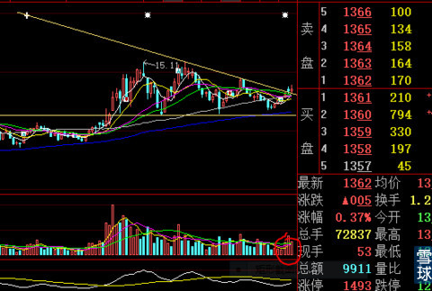
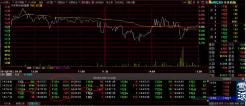
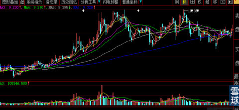
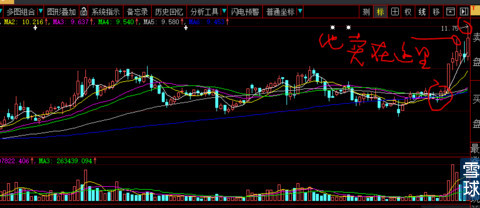
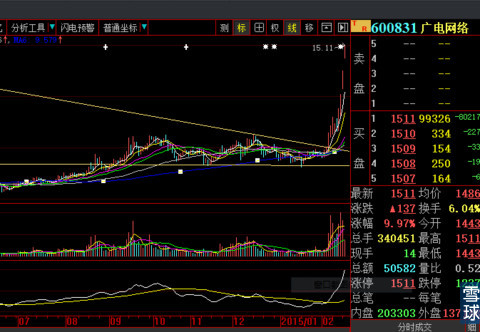

它昨天就已经用跳空的方式越过三角形上边，虽然跳空越过的很隐秘，但是从2/ 3处最有力量位置向上突破已经被老猎手发现了。见下图

其实2月2日这天主力盘中的砸盘试底牢靠不牢靠动作，我已经发现大资金的动机以及实力到底多大？他们打算未来高度的预期了，这些从手法、单笔量的连续性都可以一眼观察出来。这天的成交很少，扣除主力对倒盘更是少的可怜。第二天主力加大对倒力度放量，再一天利用大盘环境向下打压，你们现在再去看，会发现一个秘密，下得空间不大，但是时间却连续5天，再耐心的人都会放弃。之后再8天才到这个位置，你觉得现在任何人说话，它还会回去吗？所以我说：不要怕。

这个帖子算是对刚才那位粉丝的回复吧，正好这回有20分钟时间。
我没有在题目上写代码与名称，就是不想引起躁动。你把它的业绩与股价、盘子大小去对比，很简单就知道最低目标位。祝提问的粉丝过年好。
法眼看天下@炒的是心:老师，如果是假突破呢？要不要观察等回抽后有效突破再买进？
炒的是心@法眼看天下: 没有假突破，你就是心法太乱。就像600831广电网络2月5日回答你们：它是真突破不是假突破。结果，他回复我，还是卖在了2月9日的最高价11.1元附近盘中的高点卖出。现在你再看就是卖在山脚下。不要去赌自己都不明白的东西，老实人不会吃亏的。死的都是半吊子技术派。见下图
1、启动前的“黎明静悄悄”，不动声色。

2、2月5日我在这里公开说：这是真突破不是假突破。但是2天后他卖在这里。

3、今天的收盘图如下。

弦-歌@炒的是心:严格的三角形第一波高点应该在三角形的边上吧
炒的是心@弦-歌: 哈哈哈，你也太可爱了。如果不是时机的因素（年报时间限制），它的第二个高点就不会低于第一个，时间跨度也就不会这么长。当然，股价到相对高点会有几天的上冲下突，就像2月9日600831的前后两天，你懂我在说什么的。
 |
跳空越过三角形上边实战指导炒的是心 2015-02-17 18:46:19 |
Copyright © 1996-2014 SINA Corporation All Rights Reserved.